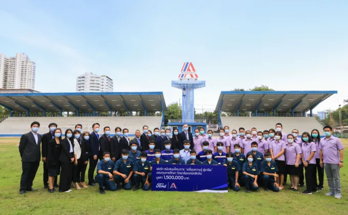

THAI-AUSTRIAN TECHNICAL COLLEGE

นโยบาย
นโยบายของวิทยาลัย
เพื่อให้การดำเนินงานของวิทยาลัยเทคนิคสัตหีบ สอดคล้องกับนโยบายกรมอาชีวศึกษา และในการดำเนินงานของกองวิทยาลัยเทคนิค
วิทยาลัยเทคนิคสัตหีบจึงขอสรุปสาระสำคัญของนโยบาย และแนวทางดำเนินงานดังกล่าว เพื่อใช้เป็นทิศทางในการปฎิบัติงานให้เกิดผลดี
ในทางปฏิบัติอย่างจริงจัง (Mission)
1. การสอนของครู-อาจารย์ ทั้งวิชาสามัญ ทฤษฎี และภาคปฏิบัติ ให้เน้นเรื่องการเข้าสอนตรงเวลา การสอนเต็มเวลา ตรงตามตารางสอน
2. การจัดทำสื่อการเรียนการสอนรายวิชาต่างๆ ในรูปแบบของ แผ่นใส สไลด์ วีดีทัศน์ บทเรียนคอมพิวเตอร์ และชุดฝีก เป็นต้น
3. การเขียนแผนการสอน หรือโครงการสอน ของทุกรายวิชาในทุกๆ ภาคเรียน
4. ครูอาจารย์ประเมินผลตรงตามหลักสูตรและส่งผลการเรียนตรงตามเวลาที่กำหนด
5. ปรับปรุง และพัฒนาห้องเรียนและห้องปฏิบัติการวิทยาศาสตร์ให้เพียงพอและทันสมัย
6. ปรับปรุง และพัฒนาห้องปฏิบัติการทางภาษา
7. ปรับปรุงและพัฒนาห้องปฏิบัติการคอมพิวเตอร์
8. ส่งเสริมประดิษฐ์ สิ่งประดิษฐ์ของคนรุ่นใหม่ โดยมุ่งเน้น คุณภาพ ปริมาณ และการมีส่วนร่วมของนักศึกษา
9. ส่งเสริมและสนับสนุนการทำโครงงานวิทยาศาสตร์
10. การแต่งกาย การตรงต่อเวลา ความรับผิดชอบ และความสามัคคีของนักเรียน นักศึกษา
11. จัด และตกแต่งวิทยาลัยให้ สะอาด สวยงาม ร่มรื่น
12. จัดที่นั่ง และบริเวณที่พักผ่อน สำหรับนักศึกษา
13. ความสะอาดความเป็นระเบียบของห้องเรียน อาคาร โรงฝึกงาน ห้องปฏิบัติการ โรงอาหาร
14. ปรับปรุงห้องน้ำครู-อาจารย์ และห้องน้ำนักศึกษา เน้นความพร้อมและสะอาด
15. ปรับปรุงและพัฒนาห้องเครื่องมือ ( Tool Room ) ของทุกโรงงาน ทุกสาขาวิชาชีพให้ได้มาตรฐานเหมาะสม มีเครื่องมือเบื้องต้นครบ
16. จัดให้มีรับงานการค้า เพื่อหารายได้สนับสนุน การพัฒนาวิทยาลัยอย่างมีระบบ และยึดระเบียบ
17. จัดการเรียนการสอนระบบทวิภาคีในแผนกวิชาที่มีความพร้อม สามารถรับนักศึกษาได้
18. จัดการเรียนการสอนสนับสนุนสำหรับคนพิการ และคนด้อยโอกาสทางสังคม
19. ปรับปรุง และพัฒนางาน ทะเบียน งานวัดผลประเมินผล ศูนย์ข้อมูลโดยใช้ระบบคอมพิวเตอร์ร่วมกันอย่างเป็นระบบ
20. จัดปรับปรุงห้องสมุดให้มีครุภัณฑ์เพียงพอกับจำนวนนักศึกษาและเป็นห้องสมุดเทคโนโลยี
21. จัดกิจกรรมของนักศึกษาอย่างเป็นระบบ สามารถตรวจสอบได้
22. เพิ่มโอกาสทางการศึกษา และเรียนรู้อย่างทั่วถึง
23. มีการพัฒนา 4 ใหม่ คือ คนไทยยุคใหม่ ครูยุคใหม่ แหล่งเรียนรู้ใหม่ ระบบการบริการจัดการใหม่
24. พัฒนาระบบคุณวุฒิวิชาชีพเชื่อมโยงระหว่างภาครัฐและเอกชนเพื่อยกระดับคุณภาพสู่สากล